- 01 二进制：不了解计算机的源头，你学什么编程.md.html
- 02 余数：原来取余操作本身就是个哈希函数.md.html
- 03 迭代法：不用编程语言的自带函数，你会如何计算平方根？.md.html
- 04 数学归纳法：如何用数学归纳提升代码的运行效率？.md.html
- 05 递归（上）：泛化数学归纳，如何将复杂问题简单化？.md.html
- 06 递归（下）：分而治之，从归并排序到MapReduce.md.html
- 07 排列：如何让计算机学会“田忌赛马”？.md.html
- 08 组合：如何让计算机安排世界杯的赛程？.md.html
- 09 动态规划（上）：如何实现基于编辑距离的查询推荐？.md.html
- 10 动态规划（下）：如何求得状态转移方程并进行编程实现？.md.html
- 11 树的深度优先搜索（上）：如何才能高效率地查字典？.md.html
- 12 树的深度优先搜索（下）：如何才能高效率地查字典？.md.html
- 13 树的广度优先搜索（上）：人际关系的六度理论是真的吗？.md.html
- 14 树的广度优先搜索（下）：为什么双向广度优先搜索的效率更高？.md.html
- 15 从树到图：如何让计算机学会看地图？.md.html
- 16 时间和空间复杂度（上）：优化性能是否只是“纸上谈兵”？.md.html
- 17 时间和空间复杂度（下）：如何使用六个法则进行复杂度分析？.md.html
- 18 总结课：数据结构、编程语句和基础算法体现了哪些数学思想？.md.html
- 19 概率和统计：编程为什么需要概率和统计？.md.html
- 20 概率基础（上）：一篇文章帮你理解随机变量、概率分布和期望值.md.html
- 21 概率基础（下）：联合概率、条件概率和贝叶斯法则，这些概率公式究竟能做什么？.md.html
- 22 朴素贝叶斯：如何让计算机学会自动分类？.md.html
- 23 文本分类：如何区分特定类型的新闻？.md.html
- 24 语言模型：如何使用链式法则和马尔科夫假设简化概率模型？.md.html
- 25 马尔科夫模型：从PageRank到语音识别，背后是什么模型在支撑？.md.html
- 26 信息熵：如何通过几个问题，测出你对应的武侠人物？.md.html
- 27 决策树：信息增益、增益比率和基尼指数的运用.md.html
- 28 熵、信息增益和卡方：如何寻找关键特征？.md.html
- 29 归一化和标准化：各种特征如何综合才是最合理的？.md.html
- 30 统计意义（上）：如何通过显著性检验，判断你的A_B测试结果是不是巧合？.md.html
- 31 统计意义（下）：如何通过显著性检验，判断你的A_B测试结果是不是巧合？.md.html
- 32 概率统计篇答疑和总结：为什么会有欠拟合和过拟合？.md.html
- 33 线性代数：线性代数到底都讲了些什么？.md.html
- 34 向量空间模型：如何让计算机理解现实事物之间的关系？.md.html
- 35 文本检索：如何让计算机处理自然语言？.md.html
- 36 文本聚类：如何过滤冗余的新闻？.md.html
- 37 矩阵（上）：如何使用矩阵操作进行PageRank计算？.md.html
- 38 矩阵（下）：如何使用矩阵操作进行协同过滤推荐？.md.html
- 39 线性回归（上）：如何使用高斯消元求解线性方程组？.md.html
- 40 线性回归（中）：如何使用最小二乘法进行直线拟合？.md.html
- 41 线性回归（下）：如何使用最小二乘法进行效果验证？.md.html
- 42 PCA主成分分析（上）：如何利用协方差矩阵来降维？.md.html
- 43 PCA主成分分析（下）：为什么要计算协方差矩阵的特征值和特征向量？.md.html
- 44 奇异值分解：如何挖掘潜在的语义关系？.md.html
- 45 线性代数篇答疑和总结：矩阵乘法的几何意义是什么？.md.html
- 46 缓存系统：如何通过哈希表和队列实现高效访问？.md.html
- 47 搜索引擎（上）：如何通过倒排索引和向量空间模型，打造一个简单的搜索引擎？.md.html
- 48 搜索引擎（下）：如何通过查询的分类，让电商平台的搜索结果更相关？.md.html
- 49 推荐系统（上）：如何实现基于相似度的协同过滤？.md.html
- 50 推荐系统（下）：如何通过SVD分析用户和物品的矩阵？.md.html
- 51 综合应用篇答疑和总结：如何进行个性化用户画像的设计？.md.html
- 导读：程序员应该怎么学数学？.md.html
- 开篇词 作为程序员，为什么你应该学好数学？.md.html
- 数学专栏课外加餐（一） 我们为什么需要反码和补码？.md.html
- 数学专栏课外加餐（三）：程序员需要读哪些数学书？.md.html
- 数学专栏课外加餐（二） 位操作的三个应用实例.md.html
- 结束语 从数学到编程，本身就是一个很长的链条.md.html
- 捐赠
34 向量空间模型：如何让计算机理解现实事物之间的关系？
你好，我是黄申。
之前我们讲过如何让计算机理解现实世界中的事物，方法是把事物的各种特性转为机器所能理解的数据字段。而这些数据字段，在机器学习里通常被称为特征。有了特征，我们不仅可以刻画事物本身，还能刻画不同事物之间的关系。
上一个模块我们只是了解了监督式学习，重点考察了特征和分类标签之间的关系。但是在信息检索和非监督式学习中，我们更关注的是不同事物之间的相似程度。这就需要用到线性代数中的向量空间模型了。
提到向量空间模型，你可能对其中的概念有点陌生，所以我会从向量空间的基本概念开始说起，讲到向量空间模型的相关知识，最后再讲讲它是如何应用在不同的编程中的。
什么是向量空间？
上一节，我讲到了向量和向量空间的一些基本概念。为了帮助你更好地理解向量空间模型，我这里给出向量和向量空间的严格定义。
首先假设有一个数的集合\(F\)，它满足“\(F\)中任意两个数的加减乘除法（除数不为零）的结果仍然在这个\(F\)中”，我们就可以称\(F\)为一个“域”。我们处理的数据通常都是实数，所以这里我只考虑实数域。而如果域\(F\)里的元素都为实数，那么\(F\)就是实数域。
如果\(x\_{1}，x\_{2}，……，x\_{n}∈F\)，那么\(F\)上的\(n\)维向量就是：
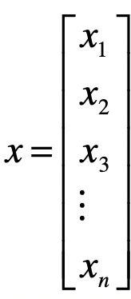
或者写成转置的形式：
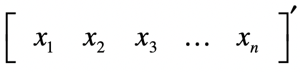
向量中第\(i\)个元素，也称为第\(i\)个分量。\(F\_{n}\)是由\(F\)上所有\(n\)维向量构成的集合。
我们已经介绍过向量之间的加法，以及标量和向量的乘法。这里我们使用这两个操作来定义向量空间。
假设\(V\)是\(F\_{n}\)的非零子集，如果对任意的向量\(x\)、向量\(y∈V\)，都有\((x+y)∈V\)，我们称为\(V\)对向量的加法封闭；对任意的标量\(k∈V\)，向量\(x∈V\)，都有\(kx\)属于\(V\)，我们称\(V\)对标量与向量的乘法封闭。
如果\(V\)满足向量的加法和乘法封闭性，我们就称\(V\)是\(F\)上的向量空间。向量空间除了满足这两个封闭性，还满足基本运算法则，比如交换律、结合律、分配律等等。这里介绍的定义和法则有点多，不过你可以不用都死记硬背下来。只要用的时候，知道有这些东西就可以了。
向量空间的几个重要概念
有了刚才的铺垫，接下来我们来看几个重要的概念：向量的长度、向量之间的距离和夹角。
向量之间的距离
有了向量空间，我们就可以定义向量之间的各种距离。我们之前说过，可以把一个向量想象为n维空间中的一个点。而向量空间中两个向量的距离，就是这两个向量所对应的点之间的距离。距离通常都是大于0的，这里我介绍几种常用的距离，包括曼哈顿距离、欧氏距离、切比雪夫距离和闵可夫斯基距离。
- 曼哈顿距离（Manhattan Distance）
这个距离度量的名字由来非常有趣。你可以想象一下，在美国人口稠密的曼哈顿地区，从一个十字路口开车到另外一个十字路口，驾驶距离是多少呢？当然不是两点之间的直线距离，因为你无法穿越挡在其中的高楼大厦。你只能驾车绕过这些建筑物，实际的驾驶距离就叫作曼哈顿距离。由于这些建筑物的排列都是规整划一的，形成了一个个的街区，所以我们也可以形象地称它为“城市街区”距离。我这里画了张图方便你理解这种距离。
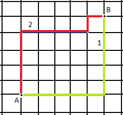
从图中可以看出，从A点到B点有多条路径，但是无论哪条，曼哈顿距离都是一样的。
在二维空间中，两个点（实际上就是二维向量）\(x(x\_{1},x\_{2})\)与\(y(y\_{1},y\_{2})\)间的曼哈顿距离是：
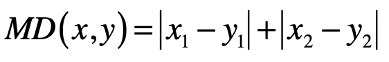
推广到\(n\)维空间，曼哈顿距离的计算公式为：
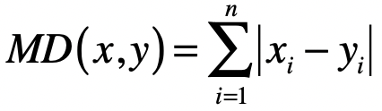
其中\(n\)表示向量维度，\(x\_{i}\)表示第一个向量的第\(i\)维元素的值，\(y\_{i}\)表示第二个向量的第\(i\)维元素的值。
- 欧氏距离（Euclidean Distance）
欧氏距离，其实就是欧几里得距离。欧氏距离是一个常用的距离定义，指在n维空间中两个点之间的真实距离，在二维空间中，两个点\(x(x\_{1},x\_{2})\)与\(y(y\_{1},y\_{2})\)间的欧氏距离是：
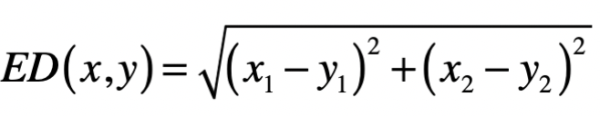
推广到n维空间，欧氏距离的计算公式为：
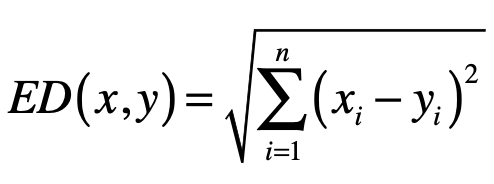
- 切比雪夫距离（Chebyshev Distance）
切比雪夫其实是在模拟国际象棋里国王的走法。国王可以走临近8个格子里的任何一个，那么国王从格子\((x\_{1},x\_{2})\)走到格子\((y\_{1},y\_{2})\)最少需要多少步呢？其实就是二维空间里的切比雪夫距离。
一开始，为了走尽量少的步数，国王走的一定是斜线，所以横轴和纵轴方向都会减1，直到国王的位置和目标位置在某个轴上没有差距，这个时候就改为沿另一个轴每次减1。所以，国王走的最少格子数是\(|x\_{1}-y\_{1}|\)和\(|x\_{2}-y\_{2}|\)这两者的较大者。所以，在二维空间中，两个点\(x(x\_{1},x\_{2})\)与\(y(y\_{1},y\_{2})\)间的切比雪夫距离是：
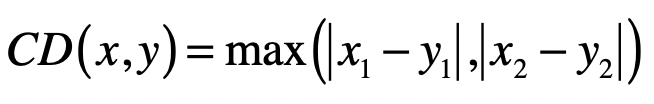
推广到n维空间，切比雪夫距离的计算公式为：
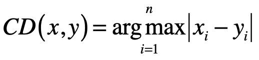
上述三种距离，都可以用一种通用的形式表示，那就是闵可夫斯基距离，也叫闵氏距离。在二维空间中，两个点\(x(x\_{1},x\_{2})\)与\(y(y\_{1},y\_{2})\)间的闵氏距离是：
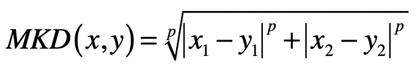
两个\(n\)维变量\(x(x\_{1},x\_{2},…,x\_{n})\)与\(y(y\_{1},y\_{2},…,y\_{n})\)间的闵氏距离的定义为：
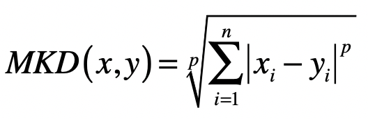
其中\(p\)是一个变参数，尝试不同的p取值，你就会发现：
当\(p=1\)时，就是曼哈顿距离；
当\(p=2\)时，就是欧氏距离；
当\(p\)趋近于无穷大的时候，就是切比雪夫距离。这是因为当\(p\)趋近于无穷大的时候，最大的\(|x\_{i}-y\_{i}|\)会占到全部的权重。
距离可以描述不同向量在向量空间中的差异，所以可以用于描述向量所代表的事物之差异（或相似）程度。
向量的长度
有了向量距离的定义，向量的长度就很容易理解了。向量的长度，也叫向量的模，是向量所对应的点到空间原点的距离。通常我们使用欧氏距离来表示向量的长度。
当然，我们也可以使用其他类型的距离。说到这里，我也提一下“范数”的概念。范数满足非负性、齐次性、和三角不等式。你可以不用深究这三点的含义，不过你需要知道范数常常被用来衡量某个向量空间中向量的大小或者长度。
\(L\_{1}\)范数\(||x||\) ，它是为\(x\)向量各个元素绝对值之和，对应于向量\(x\)和原点之间的曼哈顿距离。
\(L\_{2}\)范数\(||x||\_{2}\) ，它是\(x\)向量各个元素平方和的\(\\frac{1}{2}\)次方，对应于向量\(x\)和原点之间的欧氏距离。
\(L\_{p}\)范数\(||x||\_{p}\) ，为\(x\)向量各个元素绝对值\(p\)次方和的1/p次方，对应于向量\(x\)和原点之间的闵氏距离。
\(L\_{∞}\)范数\(||x||\_{∞}\) ，为\(x\)向量各个元素绝对值最大那个元素的绝对值，对应于向量\(x\)和原点之间的切比雪夫距离。
所以，在讨论向量的长度时，我们需要弄清楚是L几范数。
向量之间的夹角
在理解了向量间的距离和向量的长度之后，我们就可以引出向量夹角的余弦，它计算了空间中两个向量所形成夹角的余弦值，具体的计算公式我列在了下面：
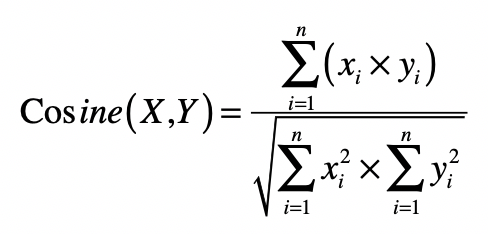
从公式可以看出，分子是两个向量的点乘，而分母是两者长度（或L2范数）的乘积，而L2范数可以使用向量点乘自身的转置来实现。夹角余弦的取值范围在[-1,1]，当两个向量的方向重合时夹角余弦取最大值1，当两个向量的方向完全相反夹角余弦取最小值-1。值越大，说明夹角越小，两点相距就越近；值越小，说明夹角越大，两点相距就越远。
向量空间模型
理解了向量间距离和夹角余弦这两个概念，你再来看向量空间模型（Vector Space Model）就不难了。
向量空间模型假设所有的对象都可以转化为向量，然后使用向量间的距离（通常是欧氏距离）或者是向量间的夹角余弦来表示两个对象之间的相似程度。我使用下图来展示空间中向量之间的距离和夹角。
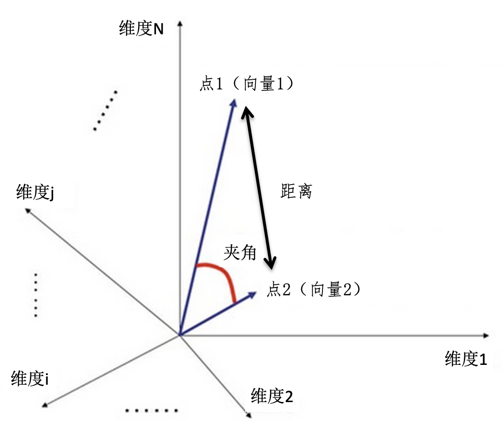
由于夹角余弦的取值范围已经在-1到1之间，而且越大表示越相似，所以可以直接作为相似度的取值。相对于夹角余弦，欧氏距离ED的取值范围可能很大，而且和相似度呈现反比关系，所以通常要进行1/(ED+1)这种归一化。
当ED为0的时候，变化后的值就是1，表示相似度为1，完全相同。当ED趋向于无穷大的时候，变化后的值就是0，表示相似度为0，完全不同。所以，这个变化后的值，取值范围是0到1之间，而且和相似度呈现正比关系。
早在上世纪的70年代，人们把向量空间模型运用于信息检索领域。由于向量空间可以很形象地表示数据点之间的相似程度，因此现在我们也常常把这个模型运用在基于相似度的一些机器学习算法中，例如K近邻（KNN）分类、K均值（K-Means）聚类等等。
总结
为了让计算机理解现实世界中的事物，我们会把事物的特点转换成为数据，并使用多维度的特征来表示某个具体的对象。多个维度的特征很容易构成向量，因此我们就可以充分利用向量和向量空间，来刻画事物以及它们之间的关系。
我们可以在向量空间中定义多种类型的向量长度和向量间距离，用于衡量向量之间的差异或者说相似程度。此外，夹角余弦也是常用的相似度衡量指标。和距离相比，夹角余弦的取值已经控制在[-1, 1]的范围内，不会因为异常点所产生的过大距离而受到干扰。
向量空间模型充分利用了空间中向量的距离和夹角特性，来描述文档和查询之间的相似程度，或者说相关性。虽然向量空间模型来自信息检索领域，但是也被广泛运用在机器学习领域中。在接下来的文章里，我会结合具体的案例，分别来说说如何在这些领域使用向量空间模型。
思考题
假设在三维空间中有两个点，它们的坐标分别是(3, -1, 8)和(-2, 3, -6)，请计算这两个点之间的欧氏距离和夹角余弦。
欢迎留言和我分享，也欢迎你在留言区写下今天的学习笔记。你可以点击“请朋友读”，把今天的内容分享给你的好友，和他一起精进。
© 2019 - 2023 Liangliang Lee. Powered by gin and hexo-theme-book.